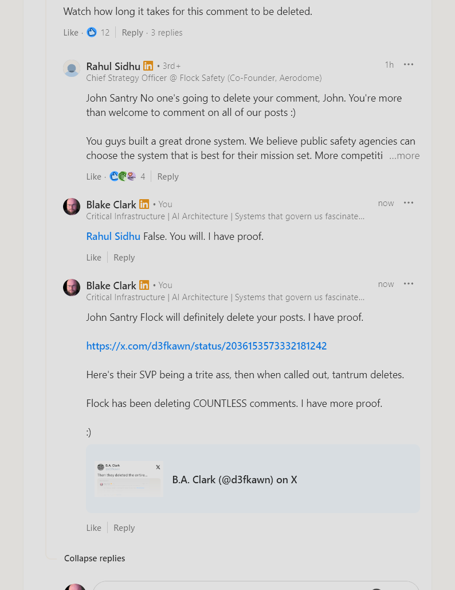
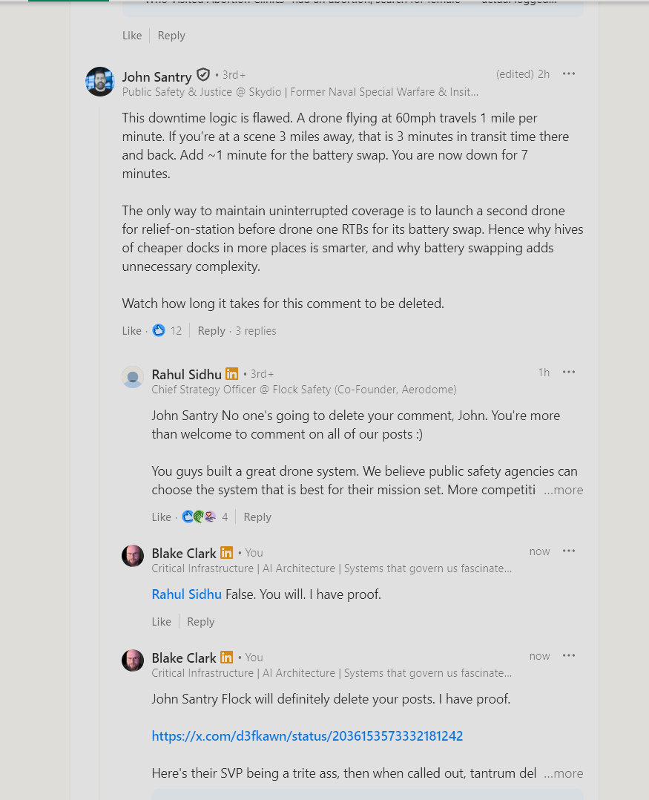
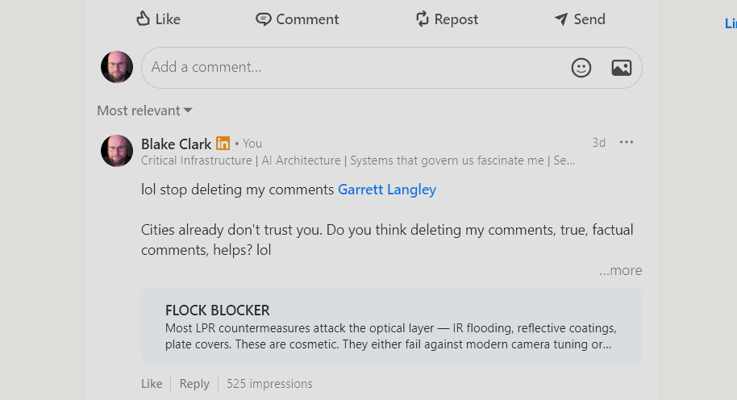

// Suppression log — documented with screenshots
Flock Safety and its employees have repeatedly attempted to suppress public criticism — deleting LinkedIn threads, removing comments, and lying about post removal. Every attempt is logged here with screenshots.
// 01 — The Record
Incident 01 — The SVP Tantrum Delete
Chris Colwell Nuked His Entire LinkedIn Thread After Being Called Out
Chris Colwell, Flock Safety's SVP of Customer Revenue Retention, posted a thread on LinkedIn. Public comments documented Flock's surveillance harms — the Texas abortion clinic tracking, the ICE data pipeline, the absence of any opt-out. When the comments couldn't be individually controlled, Colwell deleted the entire post. Not a reply. Not a single comment. The whole thread — nuked.
Source: LinkedIn, X (@d3fkawn) — x.com/d3fkawn/status/2036153573332181242
Incident 02 — The Promise
Flock's Chief Strategy Officer Publicly Promised No Deletions — Then They Deleted
John Santry, a Skydio executive and former Naval Special Warfare officer, posted a critical technical comment on a Flock-related LinkedIn thread challenging their drone downtime claims. He ended with: "Watch how long it takes for this comment to be deleted." The comment got 12 likes.
Rahul Sidhu — Flock Safety's Chief Strategy Officer and co-founder of Aerodome — personally replied: "No one's going to delete your comment, John. You're more than welcome to comment on all of our posts :)"
Blake Clark immediately responded: "False. You will. I have proof." — and linked to the documented X thread showing Flock's prior deletions, including the Colwell incident. The CSO's public promise is now evidence.


Source: LinkedIn — Rahul Sidhu (CSO, Flock Safety), John Santry (Skydio), Blake Clark
Incident 03 — The CEO's Cleanup
Garrett Langley Repeatedly Deleted Factual Comments From His LinkedIn Posts
Flock Safety CEO Garrett Langley posted on LinkedIn. Comments were added citing documented harms — true, factual, sourced from public records. The comments were deleted. Repeatedly. Not once. Not by accident. A pattern of deliberate removal of public criticism from the CEO's own feed.
Blake Clark posted directly on Langley's thread: "lol stop deleting my comments Garrett Langley. Cities already don't trust you. Do you think deleting my comments, true, factual comments, helps?" The comment included a link to FlockBlocker, pulled 525 impressions — and documented the suppression in real time on the CEO's own post.

Source: LinkedIn — Garrett Langley (CEO, Flock Safety), Blake Clark
Incident 04 — The X Thread
Real-Time Documentation of Flock's First Deletions on X
The deletions were documented in real time on X (formerly Twitter) by @d3fkawn. The thread captures Flock's initial censorship attempts as they happened — the first comments to disappear, the first threads to get nuked. This thread was later linked as proof in LinkedIn comments, creating a cross-platform evidence chain that Flock cannot scrub from either platform.
The thread is still live. Flock can delete their LinkedIn comments. They cannot delete someone else's X thread.
Source: X — @d3fkawn, x.com/d3fkawn/status/2036153573332181242
Incident 05 — The Pattern
Systematic Removal Across Multiple Flock Employee Posts
Across multiple LinkedIn posts by multiple Flock Safety employees — from the CEO to the CSO to the SVP of Customer Revenue — the same pattern repeats: public comment with sourced facts → comment disappears → post remains sanitized. The comments cite public records, published reporting, and documented system behavior. They get removed because they're effective.
Flock's CSO publicly promised they don't delete. The evidence on this page proves that was a lie.
Source: LinkedIn, X, archived screenshots
The Playbook
Step 1: Flock executive posts promotional content on LinkedIn.
Step 2: Public comments cite documented harms — abortion surveillance, ICE pipeline, no opt-out.
Step 3: Comments are deleted. Sometimes the entire post is nuked (see: Colwell).
Step 4: When confronted, the CSO personally promises "No one's going to delete your comment." (see: Sidhu)
Step 5: They delete anyway. The cycle repeats. Every deletion is screenshotted.
0
Substantive
responses
0
Facts
disputed
100%
Critical comments
removed
100%
Incidents
screenshotted
// 02 — Why This Matters
They delete sourced, factual comments that cite public records and published reporting. Not because the comments violate any policy — but because they document what Flock cannot defend.
Every deletion is a concession that the facts in that post were accurate enough to be threatening.
This page exists because they deleted. Every screenshot on this page was taken before the deletion occurred. This is a permanent, public, version-controlled record. It cannot be scrubbed. It cannot be moderated away. It lives in a git repository. The commit history is the evidence chain.
If Flock Safety deletes your comment, screenshot it first. Public criticism of a surveillance company is not harassment — it's accountability. If you have evidence of Flock suppressing public discourse, submit it.